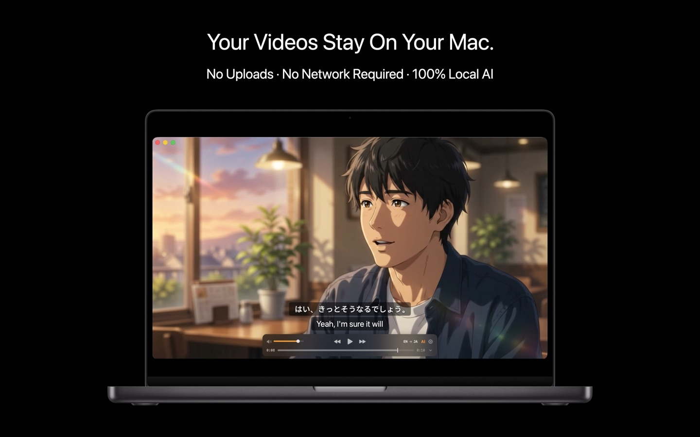
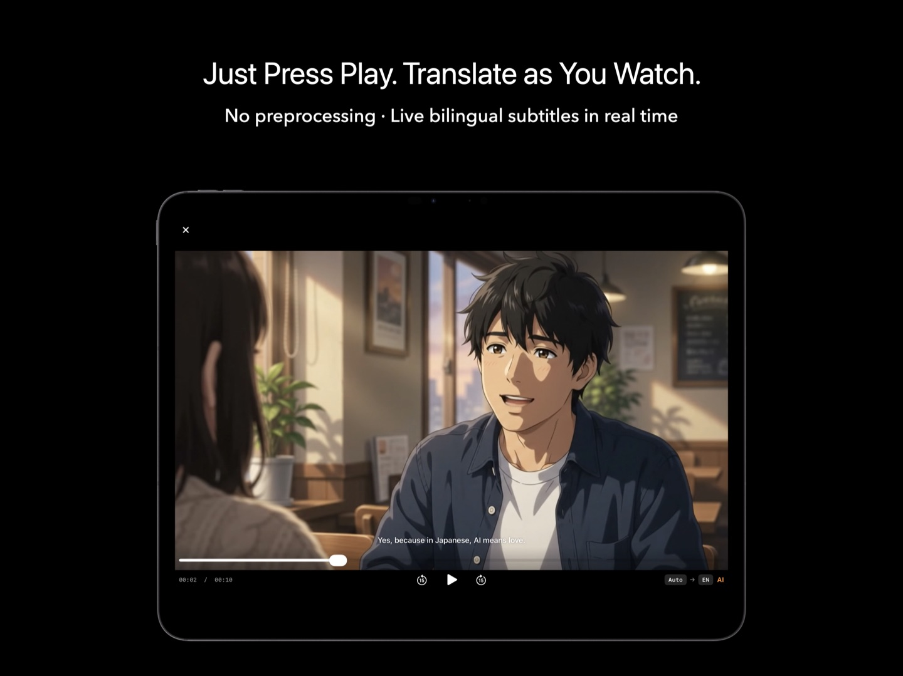

Your media. Wherever it lives.
KenjaPlayer streams straight from the places your collection already lives — Jellyfin, Plex, Emby, SMB shares, WebDAV, FTP — and then does what no other client does: runs live AI subtitles and summaries on top of your own library. Connections are direct, device to server. Nothing routes through us, because there is no "us" in the middle.
Six ways in
One client for every source you run. Add a server once; it lives in your sidebar forever.
Jellyfin
Browse and stream your Jellyfin library with artwork, watch states and direct play. Emby servers are supported too.
Plex
Connect to your Plex server and play your libraries directly — no relay, no transcode middleman unless your server chooses it.
SMB
Mount Windows / NAS shares (Samba) and browse folders of videos like they were local files.
WebDAV
Nextcloud, Synology, router USB storage — any WebDAV endpoint streams straight into the player.
FTP / FTPS
Old-school servers welcome. Point, browse, play.
Local files
Files app, Finder drag & drop, downloads — everything local plays too, of course.

Direct connections only
Self-hosters already know why this matters: your server, your network, your rules. KenjaPlayer talks to your servers the same way a browser does — device to server, over your connection.
- No middleman — streaming traffic goes straight from your server to your device.
- Credentials stay local — URLs, usernames and tokens are stored on your device only.
- No phoning home — zero telemetry, so your viewing habits stay yours.
- Works on your LAN — and through whatever remote access you already run.

The part other clients can't do
Your NAS has a decade of films in languages you don't speak, with subtitle files that don't exist. This is the exact problem KenjaPlayer was built for.
- AI subtitles on streams — live transcription and translation, applied to server playback.
- Summaries of your library — run the AI tab on any server video for a timestamped digest.
- Every format your server stores — the full 100+ format engine, not a subset.
- Still 100% on-device — the AI runs on your iPhone, iPad, Mac or Apple TV, never on your poor NAS.
Servers, questions
Does KenjaPlayer work as a Jellyfin client on Apple TV?
Do I need to expose my server to the internet?
Will AI features hammer my server?
One client.
Every server you run.
Free download — connect your first server in under a minute.
NO SUBSCRIPTION · NO ACCOUNT · NO TRACKING